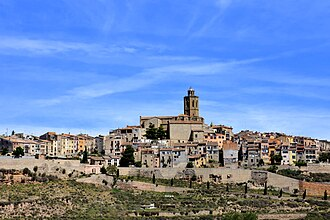

1836-1839
Vall D'ora
"Madre Janer y sus hermanas atienden a todos los heridos en el campo de batalla sin tener en cuenta sus ideas y creencias, porque la caridad no entiende de fronteras ni prejuicios."

"Ana María nace en Cervera, allí comienza su proceso de maduración vocacional que culmina en una respuesta clara y decidida: Daré a Dios toda mi vida."
"Madre Janer y sus hermanas atienden a todos los heridos en el campo de batalla sin tener en cuenta sus ideas y creencias, porque la caridad no entiende de fronteras ni prejuicios."

"Acabada la guerra, tuvo que exiliar a Francia. En Toulouse trabajó en el hospital de la Grave."

"Volvió a Cervera en 1844, pero por presiones gubernamentales dejó de ser superiora del hospital."

"En 1849 se reformó la Casa de Misericordia y le fue encomendada la dirección de este establecimiento benéfico durante dos años."

"Estuvo al frente de la Asociación de las Hijas de María en 1856."

"En 1857, fundó un instituto del que se hizo cargo, la Congregación de las Hermanas de la Sagrada Familia de Urgel."

"En Talarn Ana María transcurre sus últimos años. Sus últimas palabras “Hija Mía” son la expresión más genuina de lo que la constituye en lo más profundo: su amor maternal."